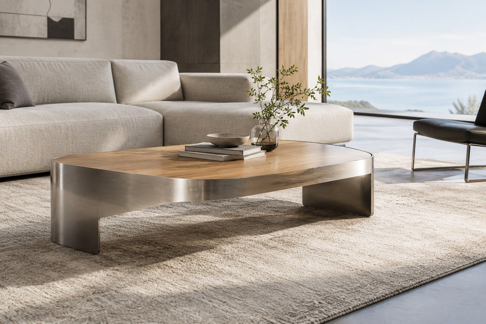

In OEM, you supply the design and specifications and the manufacturer builds to them. In ODM, the manufacturer helps develop the design as well as building it. If you already have drawings, OEM is usually the starting point. If you only have an idea, a reference photo or a sketch, ODM-style development support comes first. Many projects combine both.
The difference at a glance
| OEM | ODM | |
|---|---|---|
| You provide | Design, drawings or detailed specifications | Idea, reference photo, sketch, sample or functional requirements |
| Manufacturer provides | Engineering review, prototyping and manufacturing to your design | Design development support, CAD/3D, drawings, prototyping and manufacturing |
| Typical starting point | Technical drawings, CAD files or a finished design | A concept that still needs to become a manufacturable design |
| Design rights question | You confirm that you own or may reproduce the design | Agree at the start who owns the developed design |
| Prototype role | Check that the sample matches your design | Check that the developed design works and looks right |
| Best for | Brands with an existing design team or finished product | Brands, importers and retailers developing new private-label products |
When OEM fits
- You have drawings or CAD files and want them manufactured accurately.
- You are re-sourcing an existing product and want the same design built to your specification.
- Your in-house designers control proportions, finishes and details.
When ODM fits
- You have a reference photo or sketch but no engineering drawing.
- You want advice on structure, materials and manufacturability before committing to a design.
- You are building a private-label range and need the product developed from a concept.
Where private label fits
Private label usually means a product made for you to sell under your own brand. It can be delivered through OEM or ODM, depending on who created the design. Branding options such as logo marking and packaging depend on the product and are confirmed during review; not every product supports every option.
If your reference is a product made by another company, tell us at the start. The right to reproduce a third-party design must be clarified before development, and we do not assume it.
Not sure whether your project is OEM or ODM?
Send what you have: a photo, sketch or drawing. We will tell you which route fits and what we need next.
What you can customize in either model
- Dimensions and proportions
- Structural configuration and construction
- Materials: stainless steel and other metals, combined with wood, glass or sintered stone where required
- Surface finishes such as grinding, polishing, spray finishing and PVD plating
- Logo and brand marking, where feasible
- Packaging requirements
Limits and uncertainties
- Feasibility depends on the design, materials and finish. We may suggest changes before work starts.
- Minimum order quantity, engineering fees, prototype costs and lead times are evaluated for each project. This website does not publish fixed figures.
- Some surface finishing is arranged through qualified external suppliers; we confirm the route for your project.
- Certification or testing needs for your market should be raised at the start.
How to start
Describe the product, send any reference material and tell us your estimated quantity and timeline. For a checklist, read how to prepare a custom metal RFQ.
Discuss Your OEM/ODM Project
Tell us what you want to make under your brand and we will review it.